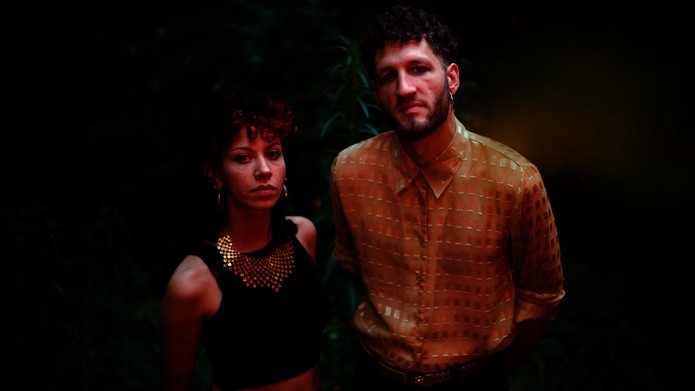

Ko Shin Moon is a French duo that merges traditional music from around the world with contemporary electronic production, creating a genre-defying sound that bridges cultures and eras. Their work incorporates influences from Middle Eastern, South Asian, and Mediterranean music, combined with modern synthesizers and experimental techniques.
Ko Shin Moon's innovative fusion of global folk traditions with electronic and experimental sounds results in a rich, eclectic musical tapestry. Their ability to seamlessly blend diverse cultural influences with modern production has garnered them acclaim for their originality and boundary-pushing artistry.
In the magical universe of the French duo Ko Shin Moon, psychedelic folk and space disco merge seamlessly. The artistic fusion between Axel Moon and Niko Shin combines the analog magic of ancient Mediterranean folk instruments with the warmth of vintage drum machines and synthesizers. Hypnotic party music that drifts between East and West, tradition and electronics, past and future. Accompanied by Palestinian and Egyptian singers Mouna Hawa and Sara El Rawy on the album 'Sîn,' the musical world of Ko Shin Moon sounds more vibrant than ever.
In het magische universum van het Franse Ko Shin Moon smelten psychedelische folk en space disco samen. De artistieke fusie tussen Axel Moon en Niko Shin combineert de analoge magie van oude, mediterrane folkinstrumenten met de warmte van vintage drumcomputers en synthesizers. Hypnotiserende feestmuziek die rondzweeft tussen het Oosten en Westen, traditie en elektronica, verleden en toekomst. Bijgestaan door de Palestijnse en Egyptische zangers Mouna Hawa en Sara El Rawy op het album ‘Sîn’ klinkt de muzikale wereld van Ko Shin Moon levendiger dan ooit.
2
⚤ Mixed
Yes